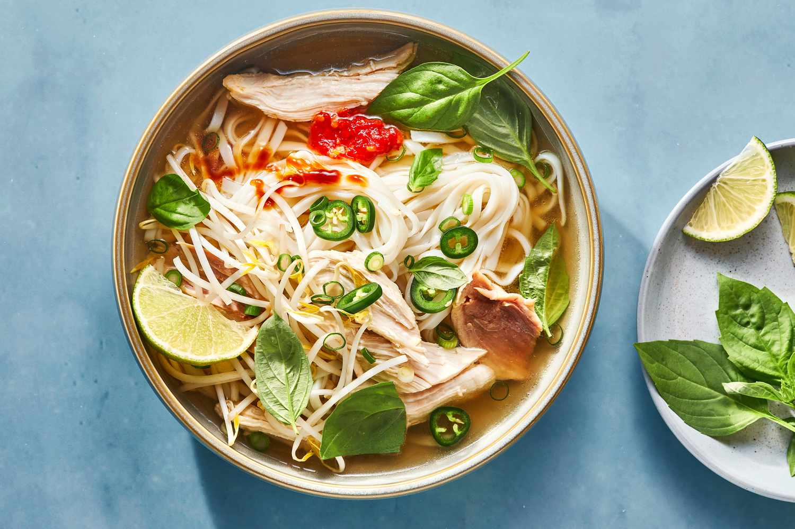

SIMPLE PHO

This easy Vietnamese inspired pho soup includes rice noodles in a flavorful broth with a meat of your choice, topped with fresh herbs and veggies.
- Your preferred meat or tofu
- Yellow onion and fresh ginger
- Spices: ground coriander, cloves, fish sauce, hoisin sauce, soy sauce, red chili paste, cinnamon, salt and pepper.
- Rice noodles
- Chicken, beef or vegetable broth
- Garnishes: Green onions, red thai chili peppers, Fresh herbs, Fresh brean sprouts, sriracha hot sauce and hoisin sauce.
- Place a large dry pot over medium heat add the onion halves and ginger pieces and cook for 4 minutes.
- Add the brother, water, coriander, clove, fish sauce, hoisin sauce, soy sauce, chili garlic paste, cinnamon stick and a pinch of fresh cracked salt and pepper to the pot. Bring to a slow boil, then reduce the head and simmer for 30 minutes or more.
- Prepare rice noodles according to the package instructions. Once soft, drain, rinse and set aside.
- Ready the garnishes in individual small bowls for serving: cilantro, basil, green onions, bean sprouts, lime wedges and sliced chilies.
- 1-5 minutes before the broth is done cooking, add desired meat to the broth to cook, just until done.
- Discard the ginger, clove, cinnamon stick and onion pieces from the pot.
- Add cooked rice noodles to individual bowls and ladle hot broth over the top. Pile high with your favorite garnishes.